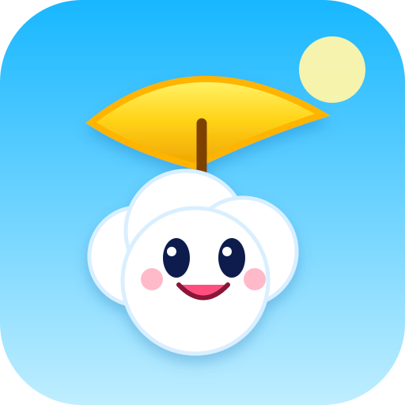

Nuage Nomade
Jouer maintenant
Android
- Ouvre le jeu dans Chrome.
- Menu ⋮ → Installer l'application ou Ajouter à l'écran d'accueil.
iPhone
- Ouvre le jeu dans Safari.
- Partager → Sur l'écran d'accueil.
Après la première ouverture, le jeu peut fonctionner hors connexion.